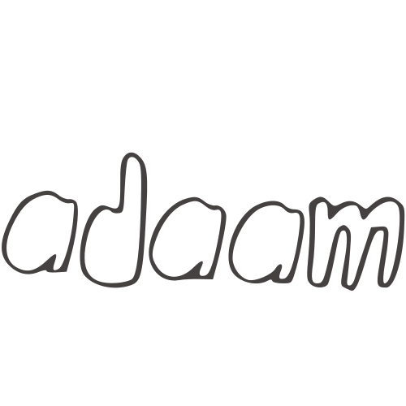

Data
Modeling and moving data between business-critical systems, reliably and repeatably.
SQL/T-SQL, Power Query (M), Power BI, Yardi Voyager, Power Automate, SharePoint Lists

I build systems that keep organizations in rhythm.
As a Data Analyst at an affordable-housing property manager, I work in data engineering and automation with Microsoft 365 and Azure.
Modeling and moving data between business-critical systems, reliably and repeatably.
SQL/T-SQL, Power Query (M), Power BI, Yardi Voyager, Power Automate, SharePoint Lists
Turning error-prone manual routines into scheduled, logged processes others can trust.
PowerShell, Power Automate, Azure Functions, Azure Blob Storage, Microsoft Entra ID
Small, well-organized programs, shipped as tools people use.
Systems I built in my current role, described generally out of respect for my employer.
Built the migration tooling for a 400-employee move between Microsoft 365 tenants, driving ShareGate with PowerShell.
PowerShell, ShareGate, Intune, Entra ID
Keeps the Microsoft 365 directory in sync with HR data, and logs which records HR needs to fix.
Entra ID, Microsoft 365, SharePoint
Daily-to-yearly database backups to Blob Storage that meet a five-year retention requirement, built in-house instead of outsourced.
Azure Functions, SQL Server on Azure, Azure Blob Storage
Turns accounting exports into ERP import files, archives each run, and delivers them over SFTP hands-free.
Power Query (M), Power BI, Power Automate, Azure Storage SFTP
Splits HUD-50059 certification packets and extracts their fields to JSON for automatic filing.
PDF processing, structured extraction, JSON
Things I build on my own time.
A zero-dependency reverse proxy for Node.js, configured in JSON. Run it from the CLI or embed it in an app.
A home for the music I write, streaming from Cloudflare R2.
A full-stack Google Cloud template: Python API and React front end, containerized for Cloud Run, with no service account keys.
I came to engineering from law, where precision and deadlines aren't optional. The habit stuck.
Data, automation, and Microsoft 365 and Azure engineering.
An 18-month intensive in JavaScript, APIs, and web development.
Want to collaborate or ask about something here? LinkedIn is the fastest way to reach me.